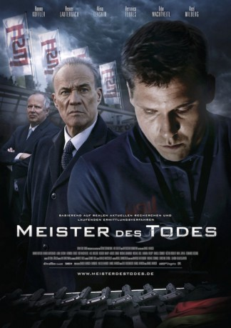

#3465 Meister des Todes
 
 IMDB-Wertung: 6.7 / 10
IMDB-Wertung: 6.7 / 10  Metascore: 0
Metascore: 0 
Deutsche Waffenexporte. Deutsche Waffen tauchen in vielen Krisengebieten der Welt auf, entgegen den angeblich restriktiven staatlichen Kontrollmechanismen. Der Thriller Meister des Todes greift diese Thematik auf und erzählt von einer solchen Firma. Die Geschichte des Films ist fiktiv, wenn auch inspiriert durch aktuelle Recherchen. Eine Waffenfirma, in wirtschaftlicher Bedrängnis von Finanzinvestoren übernommen und nun unter enormen Druck gesetzt, die Umsätze zu steigern, betreibt immer umfangreichere Exportgeschäfte mit immer fragwürdigeren Kunden - bis an die Grenzen zur Illegalität. Schließlich packt ein Mitarbeiter aus und tritt so eine Lawine los.
Jahr: 2015
Dauer: 88 Minuten
FSK: 12
Land: Deutschland Studio: Edel Media & EntertainmentTonspuren:
Untertitel:
Auflösung: 720p (1280x720) Größe: 2785 MB
Genre: Thriller
Regisseur: Daniel Harrich
Drehbuch: Jeremy Saulnier
Soundtrack:
Darsteller:
 Heiner Lauterbach als Stengele, Alex
Heiner Lauterbach als Stengele, Alex Veronica Ferres als Stengele, Sabine
Veronica Ferres als Stengele, Sabine- Michael Roll als Herckenrath, Bernd
 Christian Oliver als Hemberger, Ulrich
Christian Oliver als Hemberger, Ulrich- Daniela Schmidt als Rosales, Penelope
 Fernando Becerril als Aquila, José
Fernando Becerril als Aquila, José Hanno Koffler als Zierler, Peter
Hanno Koffler als Zierler, Peter- Udo Wachtveitl als Lechner, Otto
- Alina Levshin als Zierler, Maria
 Axel Milberg als Zöblin, Heinz
Axel Milberg als Zöblin, Heinz August Zirner als Niethammer, Andreas
August Zirner als Niethammer, Andreas Michael Brandner als Weisgerber, Kurt
Michael Brandner als Weisgerber, Kurt- Barbara Philipp als Kraus, Lisbeth
 Herbert Knaup als Hollstein, Moritz
Herbert Knaup als Hollstein, Moritz- Christof Wackernagel als Morlock, Eberhard
- Hannah Schönfelder als Zierler, Leonie
- Helena Schönfelder als Zierler, Sarah
- Jochen Decker als HSW Kollege
- Ferdinand Schmidt-Modrow als Polizist 2
- Felix Hellmann als Polizist 1
- Peter Weiß als Dienststellenleiter
- Anastasia C. Zander als Kleines Mädchen
- Gert Heidenreich als Moderator Weihnachtsfeier
- Lasse Myhr als Walsch, Kurt
- Arthur Klemt als Referatsleiter 412
- Lara-Joy Körner als Passow, Ann-Kathrin
- Abraham Sandoval als Bodyguard 1
- Baltimore Beltran als Junger Polizist Guerrero
- Juan Carlos Beyer als Deutscher Botschafter
- Juan Ignacio Cordero als Vizepräsident Polizei Guerrero
- Ruben Jimenez als Polizeipräsident Guerrero
- Juan Ramon López als Mexikanischer Junge
- Néstor Rodulfo als Rosales, Victor
- Gerardo Santínez als Bodyguard 2
- Jorge Alberto Suárez als Fahrer in Guerrero
 Maya Zapata als Aquila, Pina
Maya Zapata als Aquila, Pina
Datei: X:\2015(G-M)\Meister des Todes (2015, FSK12, 1280x720).mkv seit 11.04.2016
Festplatte: HD 2015(A-Z)
 Es gibt insgesamt 129 Filme in der Gruppe '2015(G-M)'
Es gibt insgesamt 129 Filme in der Gruppe '2015(G-M)'